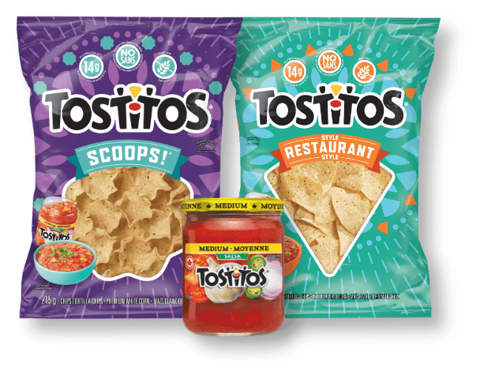

A Journey through Innovative Projects
Exploring Strategic Initiatives and Creative Solutions
Projects I've Contributed To
I've been an active member of the intelligence and consulting team, involved in various impactful projects such as:
- Thinking and defining the future of the Tostitos brand: A strategic endeavor aimed at shaping the brand's trajectory in Mexico and globally within PepsiCo.
- Creating consumer stories for PepsiCo's macro trends: Crafting compelling narratives to resonate with Latin American audiences.
- Defining communication strategies for the Volvo brand: Developing innovative approaches to enhance brand engagement in the Mexican market.
- Identifying opportunities in the niche insurance market: Exploring untapped potential for entrepreneurs in Mexico.
- Nestlé México All In annual event: Orchestrating a three-year-long internal hackathon initiative to foster innovation and idea generation among employees.
- PepsiCo's annual "Consumer Day" event: Strategizing and executing an engaging platform for presenting market trends to stakeholders.
- Co-creating the indulgent Abuelita churros cereal for Nestlé: A beloved Mexican brand now available in supermarkets.
- Identifying new product and communication territories for Pinol: Expanding market reach for AlEn's leading surface cleaner brand in Mexico.
- Revamping the toothbrush purchase experience for Colgate: Innovating both digital and physical aspects to enhance customer engagement.
- Exploring product possibilities for Herdez in collaboration with Every: Leveraging synergies between food and canned goods brands to ideate new offerings.
- Defining the future of washing and refrigeration for Mabe: Shaping the direction of a leading appliance brand in Mexico.
- Introducing the new mustard flavor for French’s: Innovating taste experiences for Mexican consumers.
- Redesigning graphic images for ADM brands: Conducting thorough analysis and testing to create visually appealing packaging now recommended by the RedBox team.
- Creating a new training model for Paz salespeople: Enhancing skill development within the super app industry in Mexico.
